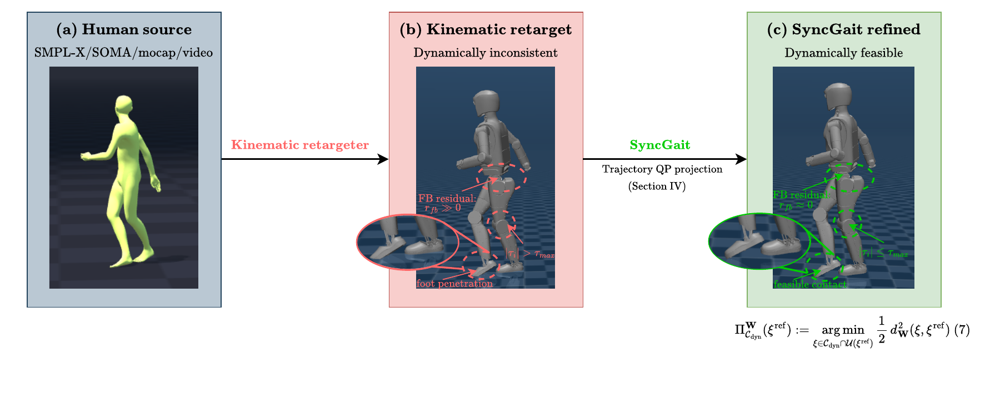
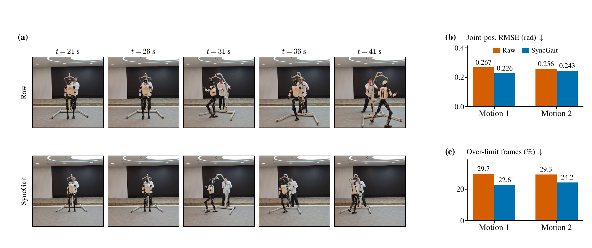

Initialize the reference
Start with retargeted configurations and a fixed contact schedule. Construct velocities with a sparse least-squares warm start consistent with trapezoidal integration.
HUMANOID ROBOTICS · MOTION RETARGETING
Preserve the motion. Refine the dynamics.

less foot skating
General-motion referencesmedian joint deviation
General-motion refinementvalidated on hardware
Two dance motionsoffline refinement
~250 frames · desktop CPUABSTRACT
Kinematic retargeting maps human motion onto a humanoid robot in configuration space. Still, kinematic compatibility does not imply dynamic feasibility: retargeted references can violate floating-base dynamics, exceed actuator limits, and prescribe stance contacts that skate or penetrate the ground. We present SyncGait, a trajectory-level refinement method that converts a kinematic reference into a dynamically admissible motion while preserving its kinematic structure. Refinement is formulated as a weighted projection onto the dynamic-feasibility set in a Riemannian trajectory metric and solved by a damped Sequential Quadratic Programming (SQP) scheme in which every iteration solves a single sparse convex quadratic program (QP) over the full motion horizon, jointly optimizing state corrections, accelerations, actuator torques, and frictional contact forces under full-order rigid-body dynamics, trapezoidal integration, holonomic stance, and actuator limits; high-weight quadratic penalties relax the remaining structural equalities with an explicitly characterized residual. Experiments show that SyncGait substantially improves open-loop contact and dynamic feasibility at small deviation from the source motion, that reinforcement-learning trackers trained on refined references consistently exhibit lower actuator saturation with comparable tracking accuracy, and that these benefits transfer to hardware on a 27 degree-of-freedom humanoid.
01 / METHOD
SyncGait treats dynamic refinement as a weighted local projection: improve physical consistency while staying close to the original retargeted motion.
Start with retargeted configurations and a fixed contact schedule. Construct velocities with a sparse least-squares warm start consistent with trapezoidal integration.
Each damped SQP iteration solves one sparse convex QP, jointly optimizing state corrections, accelerations, torques, and frictional contact forces.
Use the resulting references for downstream reinforcement-learning trackers. The study evaluates both iFSQ and Transformer policies trained with PPO.
Actuated dynamics, stance accelerations, joint and actuator limits, friction-pyramid bounds, and minimum support force.
Floating-base dynamics, integration consistency, and stance velocity use high-weight penalties. Under the stated regularity assumptions, relaxed equality residuals decay as O(1/w).
The outer SQP loop uses damping β = 0.5 and typically takes 2–4 iterations for approximately 250 frames, with fewer than 50 OSQP iterations per subproblem. If the primary QP is infeasible, a fallback softens actuated-dynamics and stance-acceleration equalities while retaining the inequalities.
Feasibility is approximate because structural constraints are penalty-relaxed. The method assumes contact-consistent initialization, uses a fixed contact schedule, and provides no global convergence guarantee.
02 / EXPERIMENTS
Evaluated in MuJoCo on 30 general-motion clips from BONES-SEED and 8 video-captured martial-arts clips, using a 27-DoF humanoid with four toe-and-heel contact sites.
| Dataset | Reference | Skating ↓m/s | Penetration ↓mm | Joint accel. ↓rad/s² | Joint jerk ↓rad/s³ | Velocity viol. ↓% |
|---|---|---|---|---|---|---|
| General · 30 clips | Raw | 0.1900 | 0.54 | 42.99 | 1495.91 | 2.312 |
| General · 30 clips | SyncGait | 0.0501 | 0.00 | 36.70 | 1182.16 | 0.004 |
| Martial arts · 8 clips | Raw | 0.1246 | 0.00 | 18.18 | 550.86 | 0.908 |
| Martial arts · 8 clips | SyncGait | 0.1220 | 0.00 | 16.05 | 433.89 | 0.001 |
Lower is better for all metrics. Bold marks the best value within each dataset, including ties. General-motion foot skating falls from 0.1900 to 0.0501 m/s (approximately 74%); martial-arts foot skating remains essentially unchanged.
Median RMS joint-angle corrections are 0.50° for general motions and 0.20° for martial arts, with median body-position changes of 22.0 mm and 10.4 mm. Most Cartesian correction comes from floating-base adjustment.
| Tracker | Reference | τ-clip ↓N m | τ-viol ↓% | MPJPE-PA ↓mm | MPJPE-L ↓mm | Root ori. ↓degrees | MPJPE-WA ↓mm |
|---|---|---|---|---|---|---|---|
| iFSQ | Kin-only | 12.36 ± 18.62 | 25.6 ± 24.2 | 37.4 ± 10.0 | 50.5 ± 12.0 | 7.02 ± 1.86 | 336 ± 227 |
| iFSQ | SyncGait | 10.85 ± 16.55† | 23.2 ± 23.1† | 35.3 ± 10.0† | 48.1 ± 10.5† | 6.43 ± 1.41† | 343 ± 234 |
| Transformer | Kin-only | 17.22 ± 22.13 | 31.7 ± 27.4 | 34.2 ± 12.6† | 48.3 ± 12.0 | 6.16 ± 1.34 | 370 ± 237 |
| Transformer | SyncGait | 15.90 ± 20.11† | 29.6 ± 27.0† | 36.1 ± 12.2 | 49.4 ± 14.3 | 6.23 ± 1.92 | 382 ± 262 |
Frame-weighted means ± standard deviation across clips. † Significant paired difference reported in the manuscript. Bold marks only significantly better means within each tracker. Comparisons use only clips completed by both policies (mean duration 28.7 s). τ-clip measures RMS torque removed by saturation; τ-viol counts frames with any commanded torque above its limit.
Global tracking metrics are statistically unchanged. iFSQ improves local tracking; the Transformer has higher self-reference MPJPE-PA after refinement. Against the same original reference, joint-space RMSE decreases for both trackers.
On the 8 martial-arts clips (5 trials each), iFSQ is evaluated at four checkpoints from 20k to 50k environment steps. SyncGait lowers τ-clip by 0.19–0.78 N m and torque-limit violations by 0.3–0.9 percentage points at every checkpoint. Tracking varies by checkpoint, with no systematic degradation reported.
03 / REAL-WORLD VALIDATION
Matched deployments on two dance motions use the same architecture, training budget, 50 Hz controller, and safety configuration. Only the motion references differ.

| Motion | Joint RMSE · Kin-only → SyncGaitrad ↓ | Over-limit frames · Kin-only → SyncGait% ↓ |
|---|---|---|
| Dance motion 1 | 0.2668 → 0.2265 | 29.7 → 22.6 |
| Dance motion 2 | 0.2560 → 0.2431 | 29.3 → 24.2 |
Bold marks the lower value for each motion. Over-limit frames contain at least one measured joint torque above its rated limit. These hardware measurements are distinct from commanded-torque saturation in simulation.
DISCUSSION
SyncGait is an offline, local refinement method. Its current formulation uses a fixed contact schedule, relaxes some structural equalities, and omits collision constraints. Future work targets contact-sequence optimization, collision-aware refinement, and broader hardware validation.
The supplied manuscript is an anonymous ICRA 2027 submission. Public paper, code, and video links are not provided in the source materials.